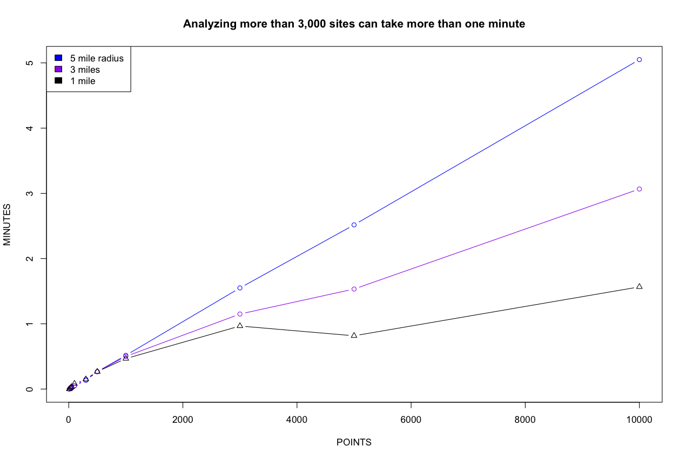
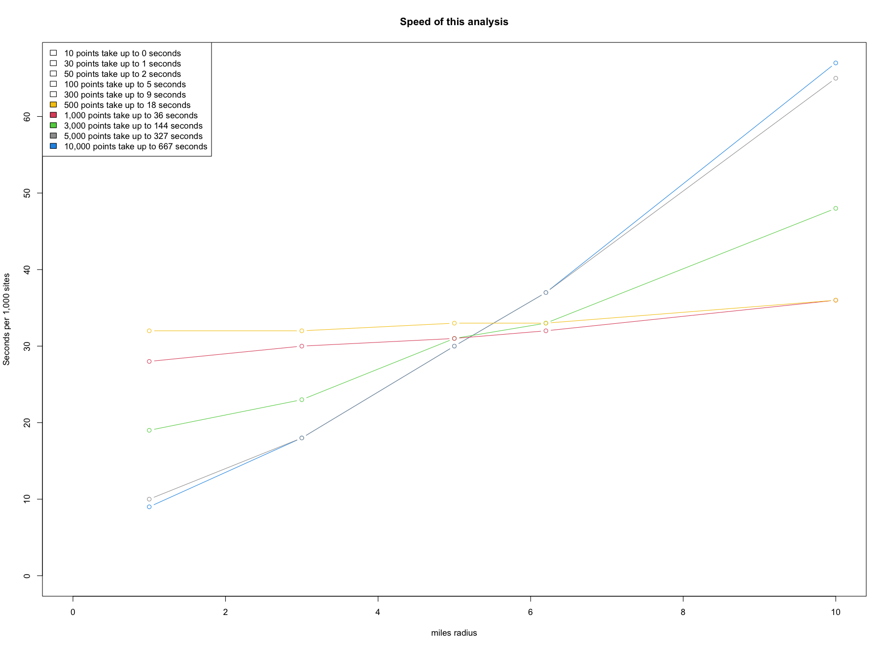
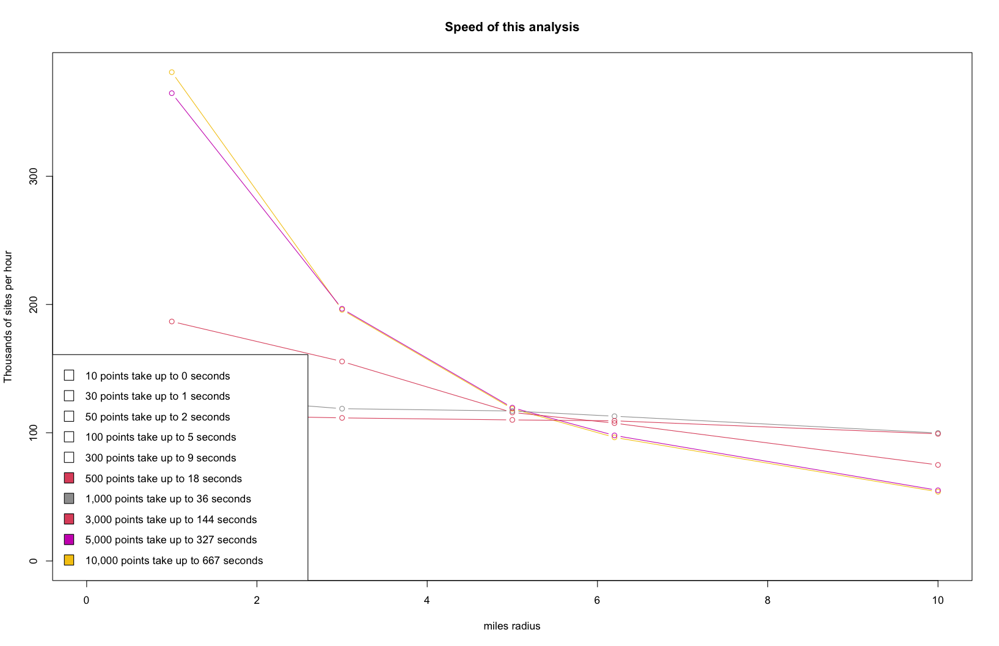

How to Check the Speed of the Overall Analysis
EJAM is designed to provide results for large numbers of sites very quickly, so it can analyze well over 100,000 sites per hour, and can analyze 1,000 sites within 30 seconds while analyzing >3,000 sites can take longer than 1 minute. This is assuming it has already been initialized with loaded data and indexing blocks when the package is loaded and attached, which needs to be done once up front and can take a minute.
Some relevant EJAM functions:
speedreport()speedmessage()speedtest()speedtest_plot()speedtable_summarize()speedtable_expand()
Note some of these are internal, not exported, so you would need to use EJAM::: if using them without doing load_all() first.
Analyzing a few points takes a few seconds, and analyzing residents within 1 to 3 miles of 3,000 points may take approximately one minute. Ten thousand sites with a radius of 5 miles at each can take about 5 minutes.
began = Sys.time()
x = ejamit(testpoints_100, radius = 1)
ended = Sys.time()
speedreport(start = began, end = ended, n = 100)
## Rate of 34,314 places per hour: 100 places took 10 secondsAnalyzing all 159 counties in Georgia can take less than 10 seconds. Analyzing all of the 3,222 US Counties may take one to two minutes.
allcounties <- fips_counties_from_state_abbrev(stateinfo$ST)
began = Sys.time()
y = ejamit(fips = allcounties)
ended = Sys.time()
EJAM:::speedreport(start = began, end = ended, n = length(allcounties))
## Counties:
## Rate of 124,477 places per hour: 3,222 places took 93 secondsAnalyzing 20 cities can take 20 seconds, for example, depending on the cities. Analyzing 200 cities may take more than one minute.
n <- 200
set.seed(1)
cities_sample <- sample(censusplaces$fips, n)
began = Sys.time()
y = ejamit(fips = cities_sample)
ended = Sys.time()
EJAM:::speedreport(start = began, end = ended, n = length(cities_sample))
## Cities, including time to download city boundaries:
## Rate of 3,807 places per hour: 20 places took 19 seconds
## Rate of 9,662 places per hour: 200 places took 75 seconds (less if cached)Speed Varies by Radius and Number of Points
You can automate running various scenarios with the speedtest() utility:
# Run the analysis at each distance for each count of sites
# (note this example could take an hour to run all these scenarios)
point_counts = c(10, 30, 50, 100, 300, 500, 1000, 3000, 5000, 10000)
radii = c(1, 3, 5, 6.2, 10)
speeds <- EJAM:::speedtest(n = point_counts, radii = radii)For small numbers of points, the radius and number of points do not have a large impact on total time, but for larger radius values the number of points matters more. Likewise, for larger numbers of points, the radius starts to have a bigger impact on time required. You can see this in plots below, where the lines are steeper for the larger radius values or for the larger counts of points.
Time Needed
# Time Needed
plot(speeds$points[speeds$miles == 5], speeds$seconds[speeds$miles == 5]/60,
type = "b", col="blue",
xlab="POINTS", ylab="MINUTES",
main = "Analyzing >3,000 sites can take >1 minute")
points(speeds$points[speeds$miles == 3], speeds$seconds[speeds$miles == 3]/60,
type = "b", col = "purple")
points(speeds$points[speeds$miles == 1], speeds$seconds[speeds$miles == 1]/60,
type = "b", pch= 2, col = "black")
legend("topleft",
legend = c("5 mile radius", "3 miles", "1 mile"),
fill = c("blue", "purple", "black"))
Time per Site
# Time per Site
EJAM:::speedtest_plot(speeds, secondsperthousand = T)
Rate (Sites per Hour)
# Rate (Sites per Hour)
EJAM:::speedtest_plot(speeds)
Detailed Results
speeds[order(speeds$points, speeds$miles), ]
## Rate of > 100,000 buffers per hour for radius < 10 miles
# points miles perhr perminute persecond minutes seconds secondsper1000
# 1 10000 10.0 53978 900 15 11 667 67
# 2 10000 6.2 96384 1606 27 6 374 37
# 3 10000 5.0 118704 1978 33 5 303 30
# 4 10000 3.0 195848 3264 54 3 184 18
# 5 10000 1.0 381144 6352 106 2 94 9
# 6 5000 10.0 55108 918 15 5 327 65
# 7 5000 6.2 97906 1632 27 3 184 37
# 8 5000 5.0 119570 1993 33 3 151 30
# 9 5000 3.0 196675 3278 55 2 92 18
# 10 5000 1.0 364759 6079 101 1 49 10
# 11 3000 10.0 74921 1249 21 2 144 48
# 12 3000 6.2 107501 1792 30 2 100 33
# 13 3000 5.0 115810 1930 32 2 93 31
# 14 3000 3.0 155565 2593 43 1 69 23
# 15 3000 1.0 186745 3112 52 1 58 19
# 16 1000 10.0 99832 1664 28 1 36 36
# 17 1000 6.2 112894 1882 31 1 32 32
# 18 1000 5.0 116952 1949 32 1 31 31
# 19 1000 3.0 118768 1979 33 1 30 30
# 20 1000 1.0 129210 2154 36 0 28 28
# 21 500 10.0 99125 1652 28 0 18 36
# 22 500 6.2 109329 1822 30 0 16 33
# 23 500 5.0 110006 1833 31 0 16 33
# 24 500 3.0 111581 1860 31 0 16 32
# 25 500 1.0 114241 1904 32 0 16 32
# 26 300 10.0 126853 2114 35 0 9 28
# 27 300 6.2 126675 2111 35 0 9 28
# 28 300 5.0 127537 2126 35 0 8 28
# 29 300 3.0 126101 2102 35 0 9 29
# 30 300 1.0 119889 1998 33 0 9 30
# 31 100 10.0 128512 2142 36 0 3 28
# 32 100 6.2 113519 1892 32 0 3 32
# 33 100 5.0 130490 2175 36 0 3 28
# 34 100 3.0 129807 2163 36 0 3 28
# 35 100 1.0 77091 1285 21 0 5 47
# 36 50 10.0 120906 2015 34 0 1 30
# 37 50 6.2 124448 2074 35 0 1 29
# 38 50 5.0 120663 2011 34 0 1 30
# 39 50 3.0 119094 1985 33 0 2 30
# 40 50 1.0 99968 1666 28 0 2 36
# 41 30 10.0 118980 1983 33 0 1 30
# 42 30 6.2 119238 1987 33 0 1 30
# 43 30 5.0 121354 2023 34 0 1 30
# 44 30 3.0 120427 2007 33 0 1 30
# 45 30 1.0 121601 2027 34 0 1 30
# 46 10 10.0 100006 1667 28 0 0 36
# 47 10 6.2 99464 1658 28 0 0 36
# 48 10 5.0 97472 1625 27 0 0 37
# 49 10 3.0 95221 1587 26 0 0 38
# 50 10 1.0 95564 1593 27 0 0 38